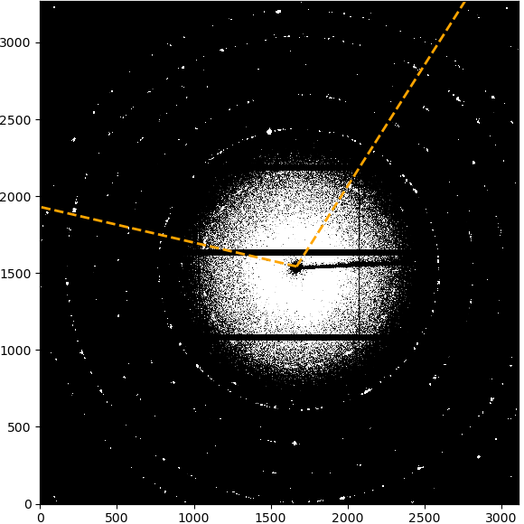
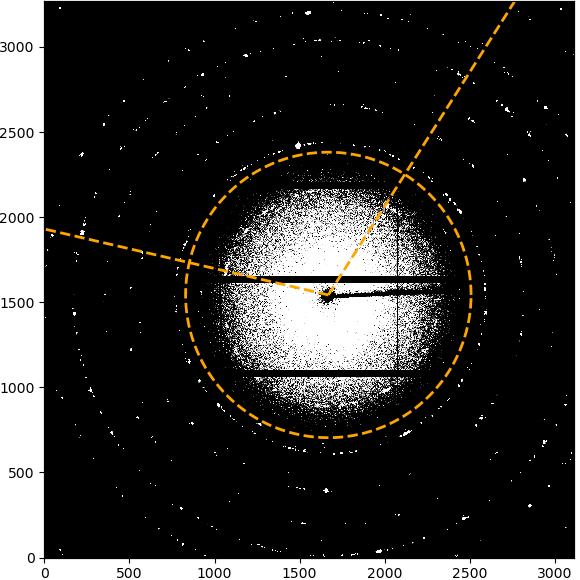

Selecting radial integration range in image
If the azimuthal range is “Full detector”, nothing will be displayed to start with. If a range has been selected, the limits of the range will be marked by two lines starting from the beamcenter. Clicking on the first point will set the inner radial limit, which will be displayed as a circle. Clicking a second time will set the upper limit and the selected integration ROI will be displayed as overlay.
|  |  | 
|
|---|---|---|
The starting azimuthal limits without any radial selection. |
After selecting the inner radial limit, it is shown as a circle. |
After selecting the outer radial limit as well, the final integration ROI is displayed. |
{kind=link}
{kind=link}
Selecting azimuthal integration range in image
If the radial range is “Full detector”, nothing will be displayed to start with. If a range has been selected, the limits of the range will be marked by two circles around the beamcenter. Clicking on the first point will set the starting radial limit and draw a line from the beamcenter. Clicking a second time will set the upper limit and the selected integration ROI will be displayed as overlay.

|

|
|
|---|---|---|
The starting radial limits without any azimuthal selection. |
After selecting the lower azimuthal limit, it is shown as a line from the beamcenter. |
After selecting the upper azimuthal limit as well, the final integration ROI is displayed. |